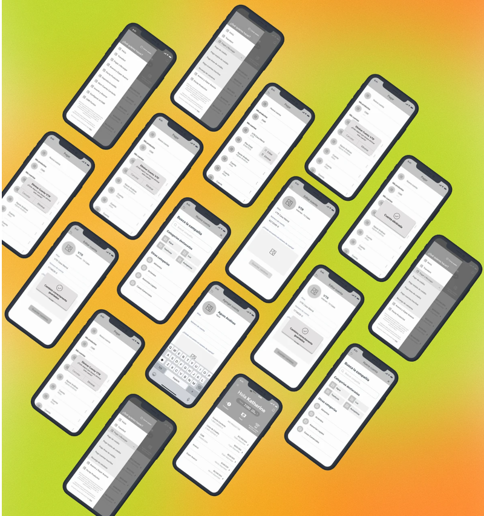
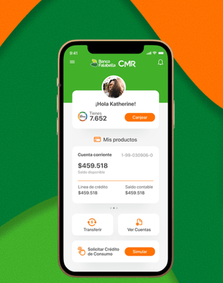
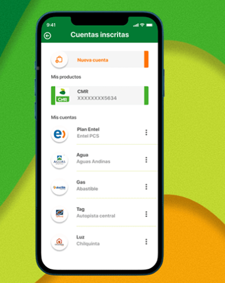

Rediseño completo de la experiencia mobile del banco, simplificando flujos críticos y modernizando la interfaz para mejorar la adopción digital entre usuarios de la plataforma.
Rol
UX/UI Designer
Año
2022
Plataforma
iOS & Android
Tipo
Redesign
Este proyecto fue realizado por un grupo de 5 profesionales multidisciplinarios como caso de estudio para el Diplomado de Diseño UX/UI AGILE impartido por la Universidad de Santiago de Chile, el cual tuvo una duración de 120 horas cronológicas.
Dentro de este proyecto participé de forma activa en el 100% de actividades y tomas de decisión para llegar a la entrega de un nuevo producto centrado en las necesidades y dolores de los clientes del Banco Falabella. Desde este momento todo nuestro equipo apodado +Gente te comentará la experiencia completa de este proceso de diseño.
Pagar las cuentas del mes puede ser un proceso engorroso por diversos motivos: la gran cantidad de estas o por tener que acceder a distintas plataformas para completar los procesos de pago. Sin embargo, actualmente existen diversas funciones dentro de aplicaciones bancarias que ayudan a simplificar este proceso.
Bajo este contexto, dimos con algunos problemas dentro de la app de Banco Falabella:
Problema principal identificado
Al inscribir una nueva cuenta, el usuario no tiene la posibilidad de editarla o eliminarla en la misma plataforma, lo cual le resta flexibilidad al uso y corrección de errores de la aplicación.
Eliminar Cuenta
¿Estás seguro que deseas eliminar esta cuenta?
Cambios correctamente guardados
Creemos que el usuario debiera poder modificar o editar sus cuentas inscritas en la App, sin necesidad de cambiar de plataforma. Para ello conocer las motivaciones y necesidades de los usuarios a profundidad es un punto muy importante para lograr soluciones efectivas.
Al mismo tiempo, queremos saber si este problema genera que el usuario al equivocarse pudiese llegar a pagar una cuenta incorrecta.
Sesiones con usuarios reales del banco para identificar pain points y tareas críticas.
Optimal Workshop para reorganizar la arquitectura de información según modelos mentales reales.
Análisis competitivo de apps bancarias líderes: Santander, BCI, Mercado Pago y Nequi.
Pruebas de usabilidad sobre la app existente para detectar fricciones concretas en los flujos.
8+
Entrevistas en profundidad
20+
Tree testings
12+
Test de usabilidad
"Me hace la vida más simple pagar todas mis cuentas a través de la App de mi banco"
César Alejandro Gutiérrez Díaz
Edad: 34 años
Género: Hombre
Ocupación: Prevencionista de riesgo
Estado civil: Soltero (conviviente)
Residencia: Santiago
Dolores
Necesidades
Nivel digital
Usuario Nivel Experto
"Trabajo desde muy pequeña, y me gustaría que un banco confiara en mí y en mi esfuerzo"
Nelly Mariela Martínez Núñez
Edad: 56 años
Género: Mujer
Ocupación: Emprendedora
Estado civil: Casada
Residencia: Quilpué
Dolores
Necesidades
Nivel digital
Usuario Nivel Básico
"Me gustó la facilidad con la que pude acceder a los productos del banco. El proceso fue 100% digital"
Jennifer Astudillo Molina
Edad: 25 años
Género: No conforme
Ocupación: Estudiante Medicina Veterinaria
Estado civil: Solter@
Residencia: La Serena
Dolores
Necesidades
Nivel digital
Usuario Nivel Intermedio
Empleamos simbología como lenguaje visual para señalar los puntos de decisión y áreas delimitadas que representan flujos externos y de seguridad.
Se destacan los caminos que recorre nuestra Proto-persona en el flujo actual, por ejemplo el flujo Happy Path en Amarillo, Whatsapp en Verde, Sitio Web en Morado y Email en Turquesa.
Además sugerimos un Happy Path de flujo ideal, con nuestra mejora de edición de cuentas ya integrada en la App.
Leyenda
Flujo original
Flujo que cruza 3 plataformas externas — el usuario pierde contexto en cada salto
Flujo ideal
Happy Path — 100% en la AppTodo el flujo sucede dentro de la App — sin saltos a plataformas externas
Dentro del gráfico podemos ver que existen mayores problemas en la tarea 2 de inscripción de cuentas, donde un patrón repetitivo en los usuarios con fallas y éxitos no directos, fue que éste avanzaba en dirección correcta y se devolvía en el árbol de navegación, probablemente para corroborar si la sección a la cual ingresaron era la correcta. Esto se puede deber a que los etiquetados o rótulos no son lo suficientemente consistentes.
Dentro de los resultados predomina un mayor porcentaje de éxito directo en ambas tareas lo cual a niveles generales es bastante positivo, sin embargo, también es interesante evaluar los resultados parcialmente incorrectos ya que son los que más nos van a servir para saber por qué han fallado los usuarios.
"Te encuentras en el Home después de haber iniciado sesión y necesitas buscar en el menú lateral la opción de pago de servicios básicos para poder pagar tu cuenta de Aguas andinas"
Findability o success
81%
Tiempo Invertido
24s
Directness
71%
"Te encuentras en el Home después de haber iniciado sesión y necesitas buscar en el menú lateral la opción de inscripción de servicios básicos para poder inscribir una nueva cuenta de gas."
Findability o success
61%
Directness
45%
Tiempo Invertido
29s
73%
de usuarios no completaba una transferencia en el primer intento por confusión en el flujo.
8 pasos
requería el flujo de pago de cuentas, cuando el estándar de la industria es 3–4 pasos.
#1
queja recurrente: "No encuentro cómo hacer una transferencia rápida".
Redefiní la estructura de navegación en base a los resultados del card sorting, priorizando las 5 acciones más frecuentes en la pantalla de inicio: saldo, transferir, pagar, QR y movimientos.
Diseño rápido de wireframes en papel y Miro para validar la estructura antes de invertir tiempo en UI. Iteración de 3 rondas con stakeholders internos.
Sistema de componentes en Figma bajo metodología Atomic Design: tokens de color, tipografía y espaciado alineados a la identidad de Falabella, con variantes para estados activos, desactivados y de error.
Sesiones de test con 8 usuarios sobre el prototipo. Se identificaron 3 fricciones adicionales que se resolvieron en una segunda iteración antes de entregar los assets al equipo de desarrollo.

El rediseño centró la experiencia en las tareas de mayor frecuencia, reduciendo la carga cognitiva y el número de pasos en los flujos críticos.
Dashboard con accesos rápidos a las 5 acciones más usadas, saldo visible y últimos movimientos al primer vistazo.
Flujo optimizado que reduce de 8 a 3 pasos el proceso de transferencia, con contactos frecuentes al inicio.
Confirmaciones claras y feedback visual inmediato en cada acción crítica, reforzando la confianza del usuario.

Esta nueva pantalla cuenta con la información más relevante para los usuarios, intuitivo y muy simple de recordar, junto a accesos directos a las secciones más importantes de la plataforma, como el botón "Canjear" que te lleva directamente a una gran oferta de productos.
Esta renovada sección cuenta con un diseño altamente intuitivo y simple de comprender por los usuarios, con accesos directos tanto a cualquier cuenta de la lista ya inscrita, como a la cuenta directa de CMR Falabella, junto a un llamativo botón que invita al usuario a inscribir nuevas cuentas.

Este nuevo modal le permite a los usuarios poder administrar su lista de cuentas inscritas, ya sea para eliminar o editar algún posible error al momento de ingresar los datos de la cuenta.
−62%
Reducción en errores de navegación
Medido en pruebas de usabilidad post-diseño vs. la app original.
8→3
Pasos en flujo de transferencias
Flujo simplificado con confirmación de 2 pasos para contactos frecuentes.
100%
Componentes documentados
Design System completo entregado en Figma bajo metodología Atomic Design.
La confianza es diseñable. En banca, cada micro-interacción (confirmaciones, estados de carga, mensajes de error) construye o destruye la confianza del usuario.
Card sorting salva meses de reiteración. Involucrar usuarios en la IA antes de wirefrear eliminó suposiciones costosas del equipo.
Menos opciones = más decisiones. Reducir el menú principal de 9 a 5 ítems aumentó significativamente la tasa de éxito en las tareas.
Atomic Design acelera la consistencia. El sistema de componentes redujo el tiempo de handoff con desarrollo y aseguró coherencia en cada pantalla.
Siguiente caso
Próximamente